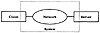

The following project plan was written before starting the study.
- 1. System Definition: The goal of the case study is to compare the performance of applications using remote pipes to those of similar applications using remote procedure calls. The key component under study is the so-called channel. A channel can be either a procedure or a pipe. The system consists of two computers connected via a network as shown in Figure 2.1. The requests are sent via the channel from the client computer to the server computer. Only the subsets of the client and server computers that offer channel services is considered to be part of the system. The study will be conducted so that the effect of components outside the system is minimized.

FIGURE 2.1 System definition for the study of remote procedure calls versus remote pipes.
- 2. Services: The services offered by the system are the two types of channel calls—remote procedure call and remote pipe. The resources used by the channel calls depend upon the number of parameters passed and the action required on those parameters. In this case study, data transfer is chosen as the application and the calls will be classified simply as small or large depending upon the amount of data to be transferred to the remote machine. In other words, the system offers only two services: small data transfer or large data transfer.
- 3. Metrics: Due to resource limitations, the errors and failures will not be studied. Thus, the study will be limited to correct operation only. For each service, the rate at which the service can be performed, the time taken for the service, and the resources consumed will be compared. The resources are the local computer (client), the remote computer (server), and the network link. This leads to the following performance metrics:
- (a) Elapsed time per call
- (b) Maximum call rate per unit of time, or equivalently, the time required to complete a block of n successive calls
- (c) Local CPU time per call
- (d) Remote CPU time per call
- (e) Number of bytes sent on the link per call
- 4. Parameters: The system parameters that affect the performance of a given application and data size are the following:
- (a) Speed of the local CPU
- (b) Speed of the remote CPU
- (c) Speed of the network
- (d) Operating system overhead for interfacing with the channels
- (e) Operating system overhead for interfacing with the networks
- (f) Reliability of the network affecting the number of retransmissions required
The workload parameters that affect the performance are the following:
- (a) Time between successive calls
- (b) Number and sizes of the call parameters
- (c) Number and sizes of the results
- (d) Type of channel
- (e) Other loads on the local and remote CPUs
- (f) Other loads on the network
- 5. Factors: The key factors chosen for this study are the following:
- (a) Type of channel. Two types—remote pipes and remote procedure calls—will be compared.
- (b) Speed of the network. Two locations of the remote hosts will be used—short distance (in the campus) and long distance (across the country).
- (c) Sizes of the call parameters to be transferred. Two levels will be used—small and large.
- (d) Number n of consecutive calls. Eleven different values of n—1, 2, 4, 8, 16, 32, ..., 512, 1024—will be used.
The factors have been selected based on resource availability and the interest of the sponsors. All other parameters will be fixed. Thus, the results will be valid only for the type of CPUs and operating systems used. The retransmissions due to network errors will be ignored (not included in the measurements). Experiments will be conducted when there is very little other load on the hosts and the network.
- 6. Evaluation Technique: Since prototypes of both types of channels have already been implemented, measurements will be used for evaluation. Analytical modeling will be used to justify the consistency of measured values for different parameters.
- 7. Workload: The workload will consist of a synthetic program generating the specified types of channel requests. This program will also monitor the resources consumed and log the measured results. Null channel requests with no actual work but with monitoring and logging activated will be used to determine the resources consumed in monitoring and logging.
- 8. Experimental Design: A full factorial experimental design with 23 × 11 = 88 experiments will be used for the initial study. The factorial experimental designs are explained in Chapter 16.
- 9. Data Analysis: Analysis of Variance (explained in Section 20.5) will be used to quantify the effects of the first three factors and regression (explained in Chapter 14) will be used to quantify the effects of the number n of successive calls.
- 10. Data Presentation: The final results will be plotted as a function of the block size n.
This case study was completed successfully and reported by Glasser (1987).
EXERCISES
- 2.1 From published literature, select an article or a report that presents results of a performance evaluation study. Make a list of good and bad points of the study. What would you do different if you were asked to repeat the study.
- 2.2 Choose a system for performance study. Briefly describe the system and list
- a. Services
- b. Performance metrics
- c. System parameters
- d. Workload parameters
- e. Factors and their ranges
- f. Evaluation technique
- g. Workload
Justify your choices.
Suggestion: Each student should select a different system such as a network, database, processor, and so on, and then present the solution to the class.
){kind=link}
){kind=link}